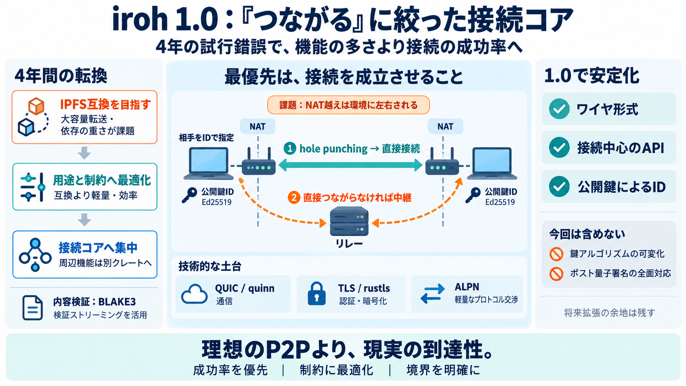

iroh 0.96.0 - The QUIC Multipaths to 1.0 - Iroh
This release includes QUIC multipath support and our adoption of QUIC-NAT-Traversal (QNT), an emerging IETF standard tha…

This release includes QUIC multipath support and our adoption of QUIC-NAT-Traversal (QNT), an emerging IETF standard tha…
If direct hole-punching fails, the system automatically uses an open ecosystem of relay servers as a fallback. Iroh is b…
### Hole-punching The fastest route is a direct connection, so if necessary, iroh tries to hole-punch. Should this fail…
Jun 19 What a week! 1.0 launch on Monday, 10k stars by Thursday. Thank you so much everyone for all of your support …
Accel Partners Partech IN-Q-TEL - US Fujitsu Tenity Stanford [...] JavaScript is disabled in your browser. enable it to …